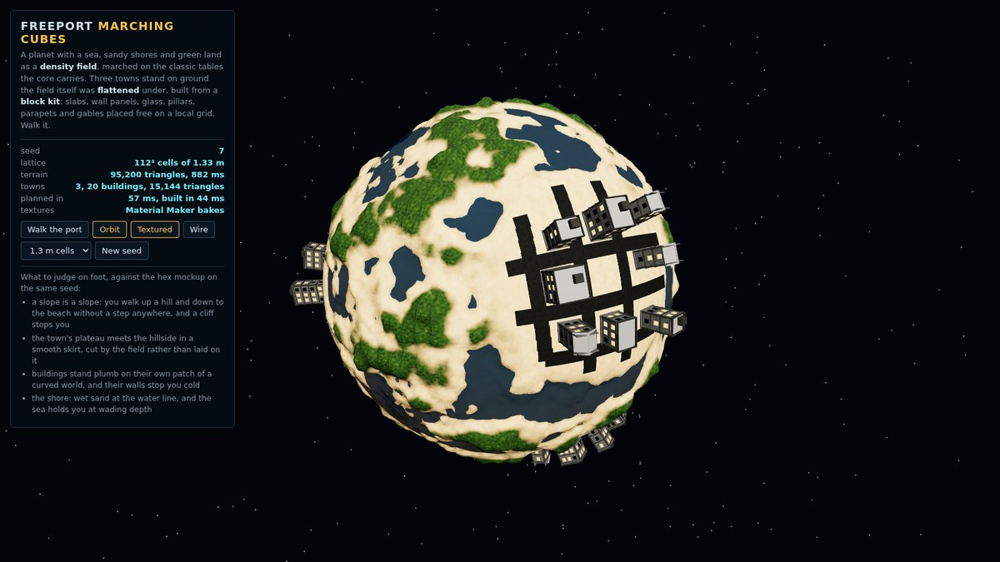
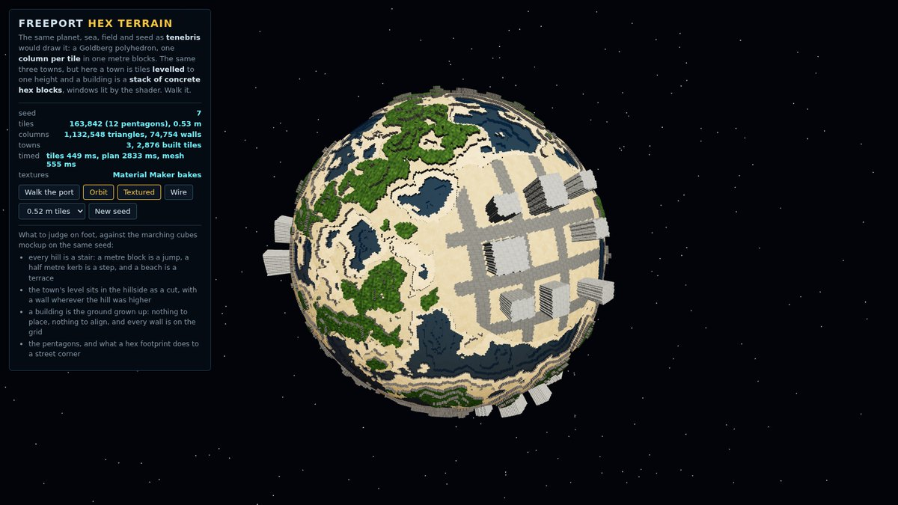
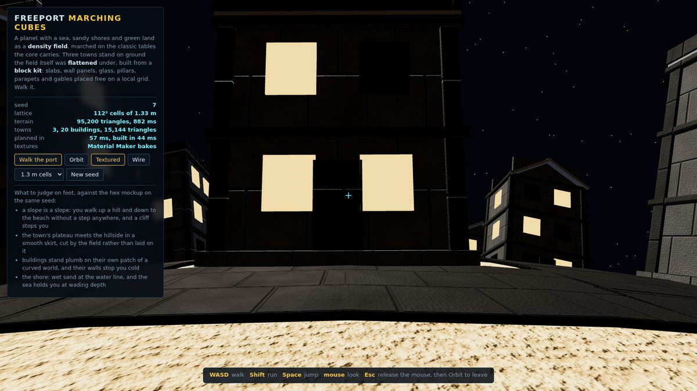
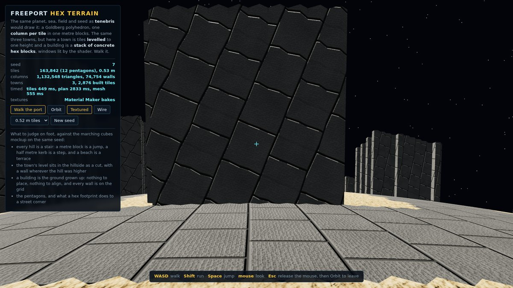
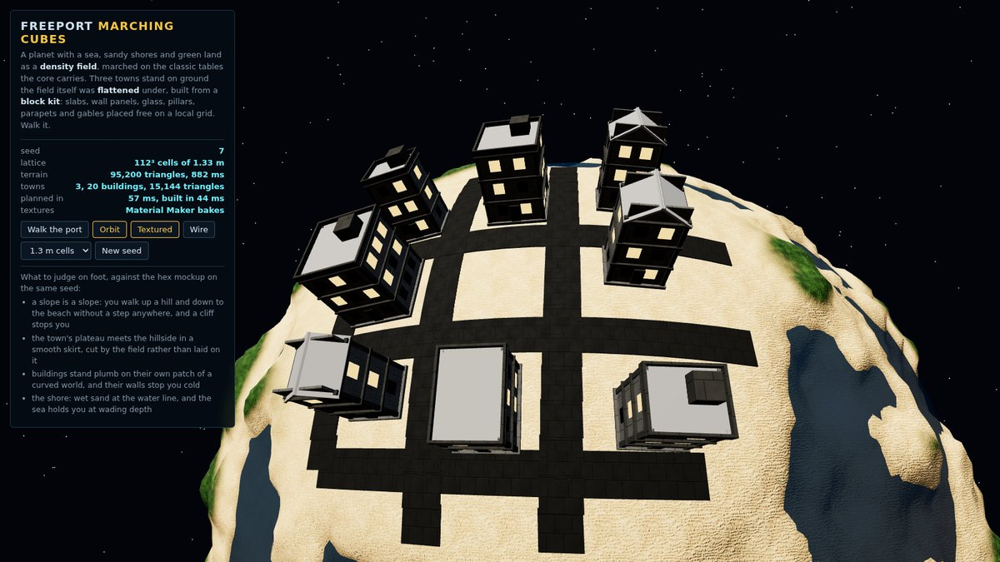
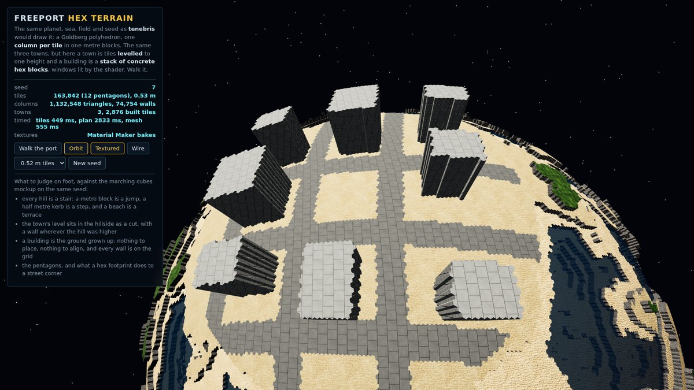
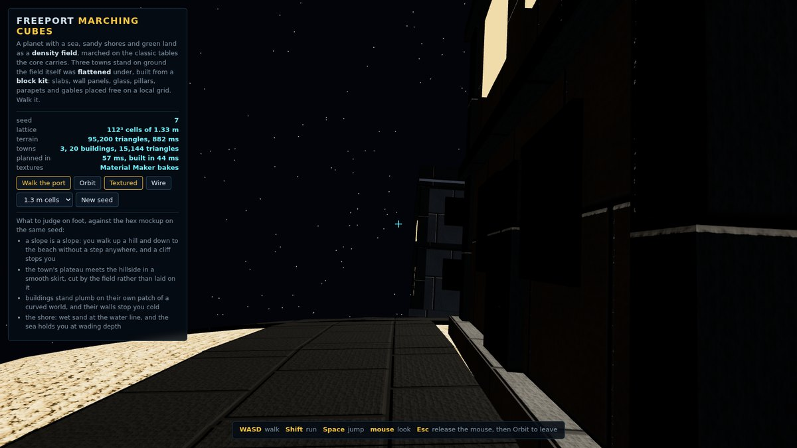
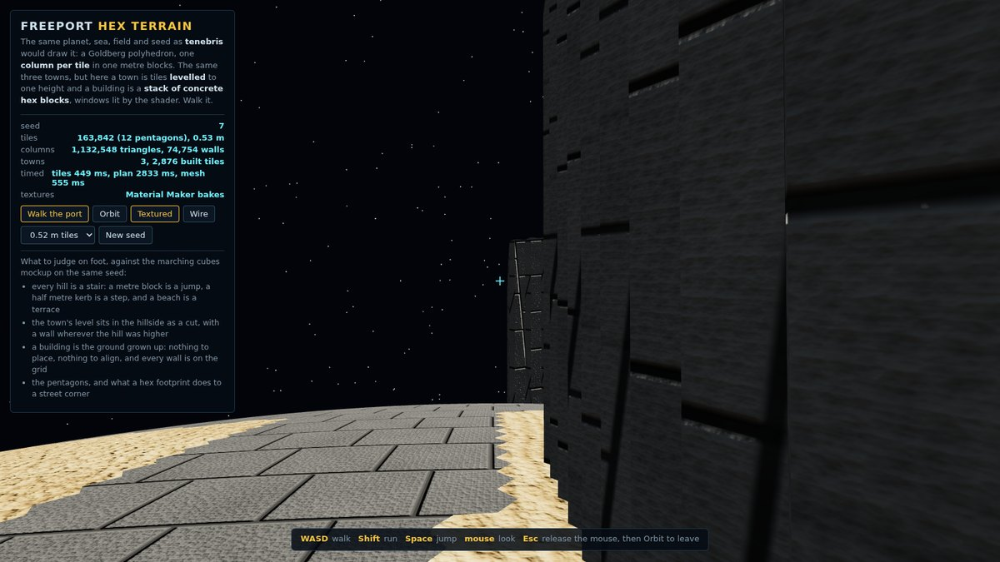
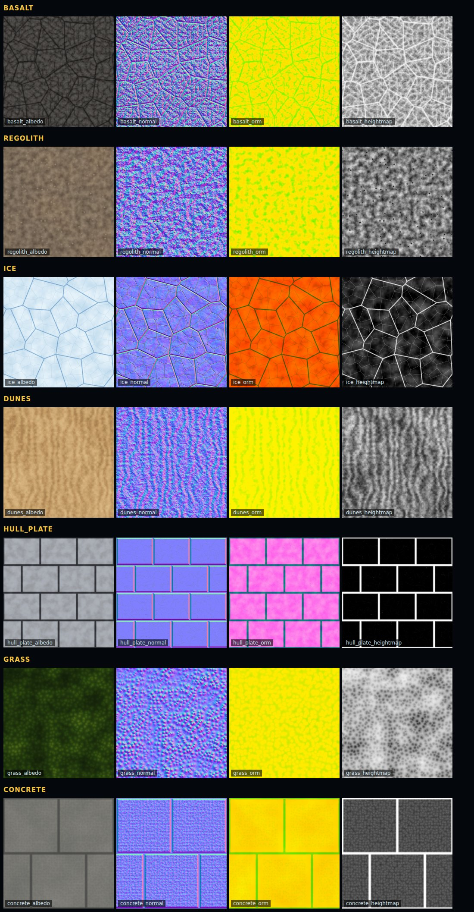

Scale
Thirteen decades in one frame
A bolt on a hull and a star in the sky are both positions in this world, and that span is what decides everything below: how a position is stored, how far a chunk of ground is drawn, and where a float stops being able to tell two things apart.
pos.rs, and the test an_f32_at_ten_thousand_kilometres_cannot_tell_a_millimetre).| the thing | the number | why that number |
|---|---|---|
| stars | about 3,000 | a map a player can learn regions of, and never all of |
| planets and moons | 10,000 to 30,000 | every star has a few, most never visited, all landable |
| a planet's radius | 200 to 3,000 km | the horizon is flat on foot and curved from orbit |
| the smallest thing that matters | 1 cm | a bolt on a hull: the walker's world |
| the walker's eye | 1.7 m | everything about the FPS controller is measured off it |
| the ship | 8 to 120 m | a thing you walk through, not a point with a camera on it |
The game
A living made between the stars
You own a ship, or a share of one. Ports need things moved, rocks hold things worth cutting, and every system has prices that drift with what its people make and lack. The verbs are Elite's and Freelancer's: undock, plot, burn, land, trade, but the ground is real, and a landing is not a cutscene. You fly down through the atmosphere onto a pad or a beach, walk down the ramp, and the ship stays where you left it until you walk back up.
Three rules set the shape of everything else. Seamless: from a star's orbit to a bolt on a hull is one scene with no loading screen and no seam, which is the whole reason for the sixty four bit frame. Embodied: the player is a first person walker who enters and exits ships and stations, so a ship is a place with an inside and a station is a floor you stand on while it orbits. Worked: the economy is a thing you take part in with your hands, hauling, mining and building, and the money is measured against what a job takes to do.
docs/proposals when they are ready, the way swarm-demo wrote its campaign. This page is the ground everything else stands on: scale, frames, terrain, the stack, and the way content is made.Positions
Three frames, one subtraction
Every position that persists, is sent, or is reasoned about is a WorldPos: f64 metres in the world frame. The renderer, the physics and the GPU work in f32, measured from a floating Origin that follows the eye. Shaders that reason about a planet (atmosphere, water, terrain) are handed coordinates in that planet's own frame. Crossing between the three is one subtraction each, done in f64 and then cast, and done in the core where a test holds it.
What lives where
Two crates, the swarm-demo boundary: freeport_core is the game's reasoning and depends on std and glam only, so it is tested without an engine and survives Bevy's next breaking release untouched; freeport_app is the Bevy harness that draws what the core says. The test for which side a thing belongs on: if two clients computed it differently, would the world diverge? Then it is core. Where a ship is, what the ground is made of at a point, what a cargo is worth: core. Which chunk mesh is on the GPU, how the camera eases: app.
Bodies on rails, ships integrating, stations as frames
- Planets, moons and stations are closed form functions of the clock. No integration, no drift, nothing to save; a solar system that cannot blow up. An orbit's speed is derived from the same gravity the integrator applies, so a coasting ship beside a station is velocity matched by construction and docking is a rendezvous, not a snap.
- The ship integrates, under avian, in the frame of the body whose gravity dominates (strongest pull, not nearest, because a moon's well overlaps its planet's), and the nav display draws a patched conic.
- A station is the fixed frame while you stand on it. The walker integrates in station local coordinates and the world position is composed from the station's pose every frame, never integrated: a walker integrated in the world frame inherits the station's orbital velocity and the deck curves away under the first jump. The same rule holds for a ship's interior in flight and for anything else with a floor on it.
- Free rotation is a quaternion; a walker is a basis. A ship's attitude is a
DQuatand its basis is derived from it; the up-authoritative tangent basis is a gimbal that flips at the pole and drops the roll, and is right only for a body glued to a surface. - Getting out leaves the ship where it is, drawn, boardable, saved. Tenebris's longest open bug was a ship that vanished on exit, and it is the first thing tested in every build, in the running game, because the headless tests passed the whole time it was broken.
The ground
A field, marched, against a grid, stacked
Two ways to turn a planet into triangles, built as three.js mockups on the same seed, the same field, the same sea and the same Material Maker textures, so the only thing that differs between the two pictures is the mesher. Both carry the same three towns and the same first person walker, because a town is where a terrain system stops being abstract. The recommendation is the field; the hex grid is tenebris's proven road and stays a live option.

freeport_core carries. Overhangs, undercut cliffs, craters with lips, caves. open the mockup (or docs/mockups/marching-cubes.html off the checkout)
docs/mockups/hex-terrain.html off the checkout)

| field + marching cubes | hex columns (tenebris) | |
|---|---|---|
| the ground can | overhang, cave, arch, undercut | terrace only: a column has one top |
| edits | change the field, remarch the chunk | change a column's height or blocks |
| building on it | needs a flattening tool; free placement | a grid to snap to, which is the game's whole argument for it |
| LOD | coarser lattice per quadtree level, skirts at seams | merge tiles, or an impostor past a cutoff (what tenebris does) |
| the look | a real landscape, smooth and lit by its own gradient | a stylised world, legible, readable at a glance |
| a town's ground | the field is flattened under it: a plateau with a smooth skirt, cut by the field rather than laid on it | the tiles are levelled: a plateau with a wall of blocks wherever the hill was higher |
| a building | a block kit: slabs, panels, panes, pillars, parapets and gables, placed free on the lot, each building plumb on its own patch of the sphere | the ground grown up: the lot's tiles raised by the storeys, tagged concrete, windows lit by the shader; nothing placed, nothing aligned |
| on foot | a slope is a slope; a cliff and a wall stop you; the body is pushed out of a box along its nearest face | every hill is a stair: a kerb is a step, a block is a jump; the body is pushed off any tile round it that stands too high |
| cost on this seed | 95,200 triangles at 1.3 m cells, plus 12,192 for 20 buildings | 1,132,548 triangles at 0.53 m tiles, 2,876 of them built |
| the call | recommended | kept live in the mockup; both share one field |
The field is field.rs: a sphere plus fractal relief on the direction plus a little three dimensional noise, and that last term is the whole reason for a field, because it is what lets a slope lean out. The noise is value noise on an integer hash with no sin in it, so two clients evaluate it bit for bit alike; the mockup's copy runs on Math.imul so a JavaScript number behaves as a u32 and a seed in the browser is the seed in the game.
Where to sample is sphere.rs: six faces of a cube inflated to a sphere, tangent warped so a corner cell is within a half of a centre cell (1.42 measured, against 5.2 for a plain cube sphere), each face a quadtree. A node splits while it is wider than a ratio of its distance from the eye, and that distance is to the patch's nearest point, not its middle: the first cut measured the middle, and an eye ten metres over the corner of a patch a thousand kilometres wide was five hundred kilometres from its middle, so the ground under the eye stayed at the coarsest level there is.
Towns
A town is where a mesher is judged
The same plan on both: three sites picked where the land is nearly level a little above the sea, the first of them by the shore because a port is the town this game is about, and a grid of ten metre blocks and four metre streets with a building on most lots, taller near the middle. What differs is what a building IS, and what the ground does under it.




The walker is the same on both, and that is the point
One first person walker, in common.js, on both pages: a position that is a direction on the sphere and a height off the ground, a heading carried as a tangent vector and squared to the local up every frame (the surface walker as a basis, which CLAUDE.md says is the one place that representation is right), velocity with acceleration and friction so a step has weight, a body radius of 35 cm, a step height of 60 cm, a jump that clears a metre, a run, and the sea holding it at wading depth. What each page supplies is two functions, and those two functions are the whole difference between the meshers on foot:
- ground(direction): the marched page answers with the field's own first crossing from space; the hex page answers with the tile under the direction, found by a greedy walk from the last tile (tenebris's own trick) rather than a scan of 163,842.
- resolve(direction, foot): the direction pushed out of anything solid the body overlaps below its step height. The marched page pushes out of a building's box along the face it came in least by; the hex page pushes off every tile round the body that stands higher than a step, a few times over. Either way the walker never asks "may I", it asks "where do I end up", which is what lets it slide along a wall rather than stick to it: the first cut asked "may I" and stood glued to the first building it touched.
Driven headless, both walkers do the same thing on the same seed: from the port's edge, 6.8 to 7.2 m up the main street to the first building's face, then a 19.4 m slide east along it, then a jump to 1.4 m. The numbers are in the page's own counter and the mockups' harness prints them, because a walker that feels right is a walker whose numbers a second person can check.
The stack
What it runs on, and what each piece displaces
| layer | choice | why, and the alternative it beat |
|---|---|---|
| engine | Bevy 0.18.1 | an ECS that proves systems disjoint from their filters, wgpu underneath so one shader language everywhere, and what swarm-demo already runs. 0.19 needs Rust 1.95 and neither physics nor the floating origin crate has followed it yet; the engine moves when all three do, in one commit that carries nothing else. Godot with C# or Unity would trade the engine free core for an editor, and the core is the thing this project is about. |
| physics | avian3d 0.6 | ECS native, an f64 build, colliders as components. Rapier through bevy_rapier is the alternative; the extra plugin layer and its own transform sync are the reason not. |
| floating origin | pos::Origin in the core, big_space 0.12 evaluated for the app | the rule (f64 world, f32 render frame, rebase past a radius, snap to a grid) lives in the core where a test holds it; whether the app rebases transforms by hand or through big_space's grid cells is an app decision, and big_space is the one to beat because it has already met the traps. |
| terrain | density field, marching cubes, cube sphere quadtree | see the section above; tenebris's Goldberg hex columns stay the alternative. |
| far planets | baked equirect impostor, tenebris's distant.fs ported to WGSL | the whole disk from a 256 by 128 texture and a 320 triangle icosphere, with the rim fresnel and the terminator faded normal detail that made tenebris's planets read from orbit. |
| atmosphere | single scatter ray march with a CPU mirror | the same eight by four sample march on both sides, so the sky dome and the distance fog agree at the horizon by construction rather than by tuning. |
| orbits | closed form on rails (orbit.rs ported) | n-body integration would drift, need saving and eventually blow up; nothing here needs it. |
| textures | Material Maker | graphs in materials/*.ptex are the source; a script bakes them through the tool's own command line into the glTF layout Bevy reads. A Python generator (swarm-demo's texkit) is the fallback when the tool cannot run, and it was not needed. |
| models | Blender to glTF, or a generator | authored things (a hull, a module, a crate) are .blend files beside their export; anything the game can make from parameters is generated in code and never baked. |
| mockups | three.js, published as artifacts | a screen, a feel, a mesher: rendered, linked, approved, then built. The move order in swarm-demo shipped four defects before it was prototyped; here the prototype comes first. |
| config | YAML with the zero sentinel | tenebris's convention: a value of nought means use the default, one file per subsystem, the schema documented at the top of the file, nothing tunable inline in a system. |
Materials
Seven surfaces, authored as graphs
Every texture is a Material Maker graph and nothing else is its source. tools/bake_materials.sh runs the tool's own command line on every graph (headless, under Xvfb and Mesa's lavapipe when there is no display), takes the Godot export because that is the glTF layout Bevy reads without conversion, box filters it to 1024 (the export writes 2048 whatever the graph says, measured), and commits the four maps. --check re-exports and holds the committed maps within half a percent of pixels: a tolerance, because a GPU render is not bit exact across drivers.

| set | what it is | where it goes |
|---|---|---|
| basalt | dark plates with cracks between them, pitted | steep ground everywhere, lava worlds, the rock under regolith |
| regolith | dust with pebbles half buried in it | the default flat ground of an airless body |
| ice | floes with fine veins, frosted, low roughness | ice worlds, polar caps, the snow line on a cold planet |
| dunes | wind ripples over larger dune bodies | deserts, and the beaches a ship lands on |
| hull plate | panels with bevels, scratched, metallic | ships, station modules, landing pads |
| grass | clumps of blades over mottled ground, dry to deep green | the land above the shore on a living world |
| concrete | poured panels with a fine aggregate and stains | buildings, streets, the pad a town stands on |
Tooling
How the work stays reviewable
The conventions are swarm-demo's, and they are checks rather than promises: /tidy runs every one before a push.
- The shape of the code.
tools/shape.py --check: no file over 900 lines, no function over 100. The list it prints is work, never a reason to raise the limit. - rustfmt and clippy. The core is clean at
-D warnings; the app's count never rises; a formatting commit carries nothing else and is read through bygit blame. - Every pub fn in the core has a doc comment and a test, and a constant lives beside the one system that reads it with its unit in the comment. Twenty two tests today, in eighty milliseconds.
- Every asset has a committed source. A PNG without a
.ptex, a glTF without a.blendor a generator, a table without the script that wrote it, is a file nobody can regenerate and nobody can review a change to. - Pictures prove refactors. The same scene on the binary from before and after,
tools/pngdiff.pyon the pair, judged against that scene's own floor. A camera for a picture is solved, never hand aimed. - Measure, then decide. Numbers in the commit message, off a clock and not the engine's clamped delta, and never "faster" without a before and an after.
- A mockup before a large feature. three.js under
docs/mockups, published as an artifact, approved, then built. The two terrain mockups on this page are the first. - No em dashes or en dashes anywhere, checked by a grep with the locale set on it.
The rig this was built on
A container with no GPU. Material Maker bakes on Mesa's lavapipe under Xvfb with the forward_plus renderer, and only that one (the mobile and GL renderers crash under lavapipe); the mockups were screenshot in headless Chromium on swiftshader; the Bevy app builds and opens a window on the same X server. Numbers from any of it are for correctness and A/B, never for a frame rate.
Stages
What comes next, in order
- The core and the mockupsf64 positions and the origin, the cube sphere quadtree, the field, the mesher, twenty two tests; seven materials baked from graphs; the two mockups with a sea, three towns and a first person walker on each; a Bevy window with one marched planetoid in it.
- The chunk streamerthe leaf set diffed every frame, new leaves sampled and marched on a worker, old ones despawned with hysteresis, one cached LOD verdict per body per frame that every pass reads, LOD anchored to the player and not the camera. Skirts at the seams. A planet you can fly down to.
- The far tier and the skythe baked impostor per body, the atmosphere march with its CPU mirror, the on-rails solar system, a logarithmic depth buffer or a far shell so a star at 1 AU draws where it looks.
- The ship and the walkera quaternion attitude with avian's f64 integrator, the walker as a tangent basis on a surface, enter and exit with the ship parked where it is, a station as a moving frame with a floor on it. Each behind its own mockup.
- The galaxya few thousand stars from a seed, their planets and moons on rails, a map that names regions, a jump between systems that is a scene handover and not a load.
- The economyports, cargo, prices that drift, mining and hauling as jobs with a wage against the time they take; its own proposal first, under docs/proposals.
Measured
Numbers, not adjectives
| what | number | how |
|---|---|---|
| core suite | 22 tests, 80 ms | cargo test -p freeport_core |
| a 6 m sphere marched | 5,288 triangles | 32^3 lattice at 0.5 m, a closed shell within 3% of the sphere's area |
| cube sphere cell area ratio | 1.42 vs 5.2 | corner to centre, tangent warped against plain, 16 by 16 |
| marching cubes mockup | 95,200 triangles, 0.9 s | 64 m planet, 112^3 lattice of 1.33 m, three towns planned in 54 ms and built in 50 ms (20 buildings, 12,192 triangles), Chromium on swiftshader |
| hex terrain mockup | 1,132,548 triangles, 5.7 s | the same seed, 163,842 tiles at 0.53 m, 74,754 walls, 2,876 built tiles; the plan is 2.6 s of it and the mesh 1.9 s |
| the walker, both pages | 7 m, 19 m, 1.4 m | up the street to the first wall, the slide east along it, the jump; the same on both to a few decimetres |
| Material Maker bake | 20 maps, under 4 min | five graphs at 2048 on lavapipe, four cores |
| the Bevy harness | 85 MB stripped | opens a window under Xvfb on lavapipe |
| tenebris, for scale | 300 m planets | 163,842 hex tiles a body, 21 MB of voxels, a 2.7 s full remesh, one 5 km cutoff; every number replaced, every rule kept |